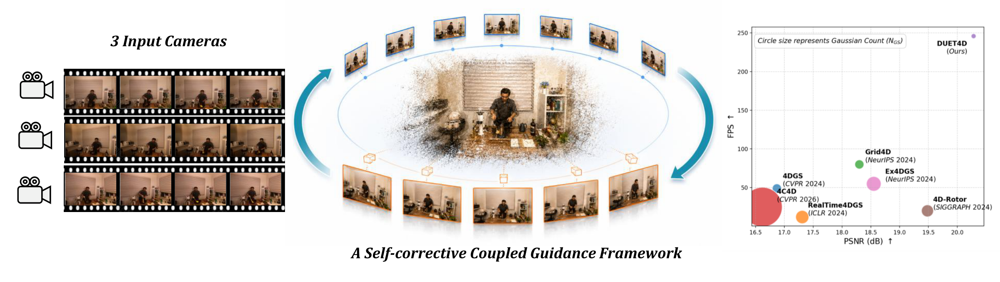
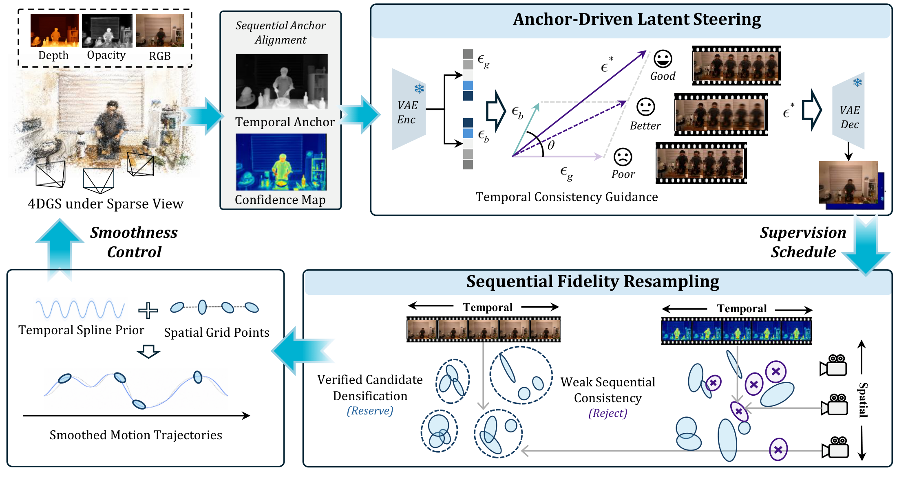
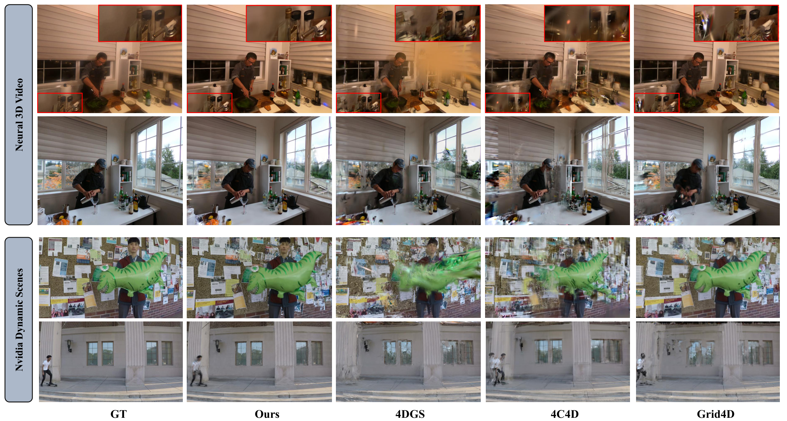
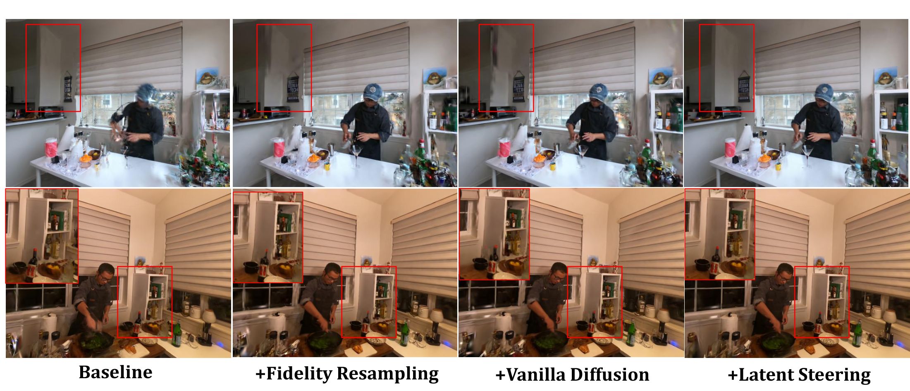

Align Gaussian evidence
Sequential anchor alignment constructs temporal anchor frames and confidence maps.

OVERVIEW
A self-corrective loop between generative priors and dynamic Gaussian evidence.
Sparse-view 4D reconstruction is highly under-constrained when only a few cameras are available. Generative priors can recover missing appearances, but video models are computationally impractical for iterative reconstruction, whereas single-view models produce temporally inconsistent pseudo-observations. Moreover, directly absorbing uncertain generative outputs into Gaussian optimization often creates redundant primitives and floating artifacts. To address these challenges, we propose DUET4D, a self-corrective coupled guidance framework for sparse-view 4D Gaussian splatting. The core of our approach is a self-corrective framework where the 4D representation guides generative prior for spatio-temporal consistent supervisions. We first construct sequential alignments from current Gaussian evidence to steer the latent restoration. Then we use Sequential Fidelity Resampling to lift generative supervisions into Gaussian space to selectively distinguish repeatedly supported primitives. The corrected representation then provides more reliable Gaussian evidence for the next restoration cycle. Extensive experiments demonstrate that DUET4D significantly improves rendering quality and rendering efficiency.
METHOD
Three connected stages turn uncertain observations into reconstruction guidance.

Sequential anchor alignment constructs temporal anchor frames and confidence maps.
Training-free anchor-driven latent steering guides the generative prior toward temporally consistent outputs.
Sequential Fidelity Resampling selects repeatedly supported primitives, improving evidence for the next restoration cycle.
EVALUATION
Quantitative results and original figures from the manuscript. Select a dataset or analysis below.
| Method | Venue | FPS ↑ | Gaussians ↓ | PSNR ↑ | SSIM ↑ | LPIPS ↓ |
|---|---|---|---|---|---|---|
| 4DGS | CVPR 2024 | 54 | 0.26M | 16.28 | 0.325 | 0.525 |
| 4D-Rotor | SIGGRAPH 2024 | 7 | 0.35M | 16.43 | 0.352 | 0.482 |
| RealTime4DGS | ICLR 2024 | 11 | 0.38M | 16.02 | 0.359 | 0.545 |
| Grid4D | NeurIPS 2024 | 16 | 1.15M | 16.35 | 0.334 | 0.538 |
| Ex4DGS | NeurIPS 2024 | 61 | 2.98M | 16.74 | 0.373 | 0.523 |
| 4C4D | CVPR 2026 | 52 | 4.06M | 16.69 | 0.352 | 0.520 |
| DUET4D (Ours) | - | 127 | 0.19M | 16.84 | 0.480 | 0.420 |
| SparseCam4D | CVPR 2026 | 11 | 0.30M | 23.92 | 0.733 | 0.251 |
| DUET4D (Ours) * | - | 123 | 0.12M | 24.87 | 0.744 | 0.229 |
| Method | Venue | FPS ↑ | Gaussians ↓ | PSNR ↑ | SSIM ↑ | LPIPS ↓ |
|---|---|---|---|---|---|---|
| 4DGS | CVPR 2024 | 49 | 0.21M | 16.87 | 0.665 | 0.380 |
| 4D-Rotor | SIGGRAPH 2024 | 5 | 0.38M | 19.48 | 0.738 | 0.315 |
| RealTime4DGS | ICLR 2024 | 12 | 0.46M | 17.53 | 0.652 | 0.434 |
| Grid4D | NeurIPS 2024 | 80 | 0.21M | 18.30 | 0.709 | 0.391 |
| Ex4DGS | NeurIPS 2024 | 32 | 0.57M | 19.21 | 0.730 | 0.304 |
| 4C4D | CVPR 2026 | 25 | 4.20M | 16.62 | 0.653 | 0.424 |
| DUET4D (Ours) | - | 246 | 0.05M | 20.28 | 0.748 | 0.296 |
| SparseCam4D | CVPR 2026 | 8 | 0.39M | 21.33 | 0.747 | 0.289 |
| DUET4D (Ours) * | - | 263 | 0.04M | 22.04 | 0.789 | 0.258 |
| Method | Venue | FPS ↑ | Gaussians ↓ | PSNR ↑ | SSIM ↑ | LPIPS ↓ |
|---|---|---|---|---|---|---|
| 4DGS | CVPR 2024 | 99 | 0.84M | 14.27 | 0.517 | 0.555 |
| 4D-Rotor | SIGGRAPH 2024 | 10 | 0.71M | 14.46 | 0.533 | 0.490 |
| RealTime4DGS | ICLR 2024 | 21 | 1.09M | 14.33 | 0.521 | 0.553 |
| Grid4D | NeurIPS 2024 | 16 | 0.46M | 12.47 | 0.492 | 0.566 |
| Ex4DGS | NeurIPS 2024 | 49 | 1.36M | 15.36 | 0.565 | 0.531 |
| 4C4D | CVPR 2026 | 35 | 3.02M | 16.99 | 0.614 | 0.507 |
| DUET4D (Ours) | - | 214 | 0.16M | 17.42 | 0.633 | 0.442 |
| SparseCam4D | CVPR 2026 | 12 | 1.02M | 19.21 | 0.674 | 0.355 |
| DUET4D (Ours) * | - | 228 | 0.13M | 20.25 | 0.692 | 0.315 |

